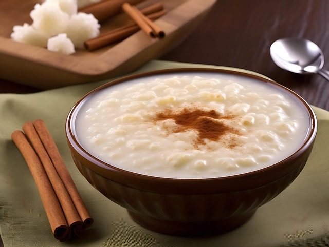

Home
Canjica

Description
Canjica is a traditional Brazilian dessert made from white hominy corn cooked slowly with milk, sugar, and spices like cinnamon and cloves. The result is a rich, creamy pudding-like dish that’s both comforting and sweet. Some variations include coconut milk, condensed milk, or grated coconut, giving it an even deeper flavor and smooth texture. It’s typically served warm, sprinkled with cinnamon, and enjoyed during festive occasions such as the June Festivals (Festas Juninas).
Beyond its delicious taste, canjica carries a strong sense of tradition and nostalgia in Brazilian culture. It’s often associated with family gatherings, winter celebrations, and the warmth of homemade food shared among friends. Each region in Brazil adds its own twist to the recipe, but the essence remains the same — a creamy, fragrant dessert that represents comfort, togetherness, and the rich culinary heritage of Brazil.
Ingredients
- Base:
- 2 cups of white hominy corn (dried white corn for canjica)
- 1.5 liters (about 6 cups) of water (for soaking and cooking)
- For the creamy mixture:
- 1 liter (about 4 cups) of milk
- 1 can (395 g / 14 oz) of sweetened condensed milk
- 1 cup of coconut milk
- ½ cup of grated coconut (optional)
- ½ cup of sugar (adjust to taste)
- 1 cinnamon stick
- 3–4 cloves (optional)
- A pinch of salt
- For serving (optional):
- Ground cinnamon (for sprinkling)
- Grated coconut or peanuts (for garnish)
Preparation
- Soak the corn:
- Rinse the white hominy corn well under running water.
- Place it in a large bowl, cover with water, and let it soak for at least 8 hours or overnight.
- This softens the grains and reduces cooking time.
- Cook the corn:
- Drain the soaked corn and place it in a large pot or pressure cooker.
- Add fresh water (about 6 cups) and cook until the kernels are soft.
- In a pressure cooker, this takes about 30–40 minutes after it starts to pressurize.
- In a regular pot, it may take 1½ to 2 hours — add more water if needed.
- Add the creamy ingredients:
- Once the corn is tender, reduce the heat and add the milk, sweetened condensed milk, coconut milk, sugar, cinnamon stick, cloves, grated coconut, and a pinch of salt.
- Stir well and simmer uncovered over low heat for 20–30 minutes, stirring occasionally to prevent sticking.
- The mixture should become thick, creamy, and slightly caramelized.
- Adjust and finish:
- Taste and adjust sweetness or consistency — add a bit more milk if you prefer it thinner.
- Remove the cinnamon stick and cloves before serving.
- Serve:
- Serve warm or chilled, topped with ground cinnamon, grated coconut, or crushed peanuts.